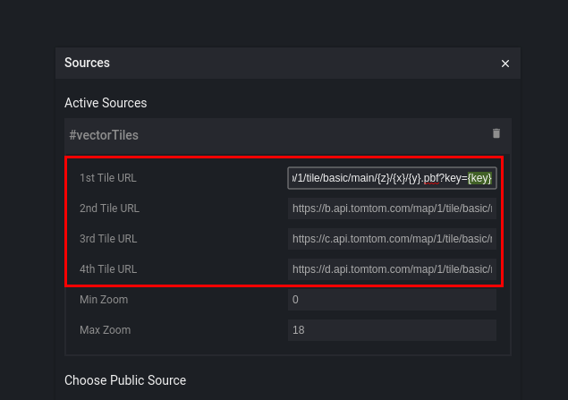
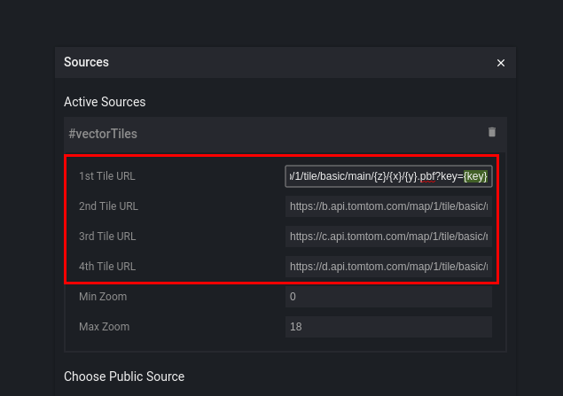

- Modify a default TomTom style for vector maps with use of the Maputnik editor
- Apply the newly created style
- API key
- Npm and Node.js

- glyphs - contains fonts used for rendering vector maps
- sprites - contains images used for rendering vector maps
- styles - contains json files with style definition
- glyphs - these are fonts in a binary pbf format. They are transformed to speed up rendering process. To read more about it, please go to here. This is a rather advanced article.
- sprites - they consist of two files:
- image file - a png file containing concatenated images
- index file - a json file describing content of an image file.
npm install && npm start
 Next, replace “{key}” placeholder in each of the tile URLs with your API key.  Close the overlay to apply the changes by clicking on X in the top right corner.
Next, replace “{key}” placeholder in each of the tile URLs with your API key.  Close the overlay to apply the changes by clicking on X in the top right corner.
 In a popup window, replace “Sprite URL” with
In a popup window, replace “Sprite URL” with http://localhost:8080/sdk/sprites/sprite
http://localhost:8080/sdk/glyphs/{fontstack}/{range}.pbf
- Online Maps Vector Tile documentation (https://developer.tomtom.com/online-maps/online-maps-documentation-vector/tile) in order to create custom styles you need to know more about a data source. In advanced use cases, it is useful to know possible layers’ names and their types.
- Maputnik editor documentation (https://github.com/maputnik/editor/wiki) guides and tutorials for the Maputnik editor